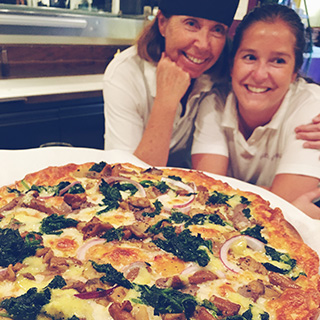
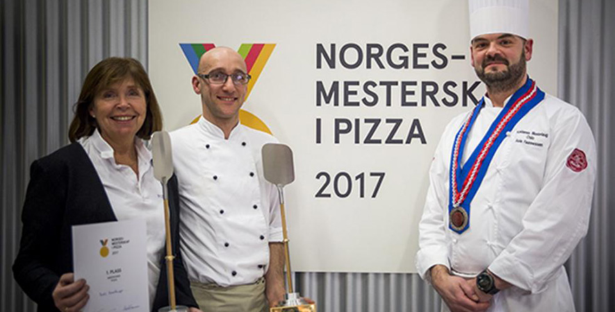

Askers første pizzarestaurant - etablert i 1983
It was Kjellaug Hasselknippe, who, after moving home from America, started up Pizzasttua with his friend Ingebjørg. Kjellaug had worked
in the hotel industry for many years and wanted to start something new - something new. On the menu there were only nine pizza variants - set
together with what they had tasted in America, Italy and elsewhere - Kjellaug and her husband Ivar have tested many of the tastes of the world when they
together traveled around the world for SAS. They may not seem so innovative today, the first 9 variants on the menu, but the pizza was in itself
quite new in Norway 30 years ago.
Always looking for new tastes
Since then, the menu has increased in line with our own travel habits. New flavors are discovered - and most of them fit a pizza.
A trip to Thailand put chili and garlic to the prawns, and the chèvres came home from France. The inspiration is on the strangest
places and we never stop looking. Every month we have a new month's gourmet, where we experiment with exciting variants. The rewards
Satisfied guests share the enthusiasm of the good pizza experience.

The entire Hasselknippe family has always been involved in Pizzastua. Man and child, nephews and nieces. Everyone contributes with both ideas and
tasting, they are also fortunately good waiters and pizzakocks. It has continued in the next generation as well. Eldildatter Bodil has driven
with her mother, sister and cousin - for longer and shorter periods, but today stands alone for the operation. Sometimes with great help from his husband and children.
Just like her mother.
Family driven restaurant
Norwegian champion 2011 and 2017
At SMAK 2011 in February, Bodil Hasselknippe was named National Champions 2011 in the class of American pizza. We are proud to be able to
offer you Norway's best American pizza. Tomaz's Tomala and our Italian pizza also made it very strong with pallet placement in Italian class and
a strong open space in open class where we sat with our own dessert pizza. Again 2017 Was Bodil Hasselknippet.
Come and taste our winning pizzas!
